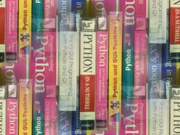

Python Books
Which is the right book?
 We are often asked "What is the best Python book?" This is a question which can't be answered with a single book, as the askers hoped for. There are more specific questions as well, such as
- What is the best Python book to learn with?
- I am complete newbie concerning programming. I want to start with Python. What is the best book you can recommend?
- I am already an experienced C and C++ programmer. What is the right book for me?
- What is the best book to learn Python from a Perl background?
- What is the best book to learn data structures and algorithms using Python?
- What is the best Python book on language processing?